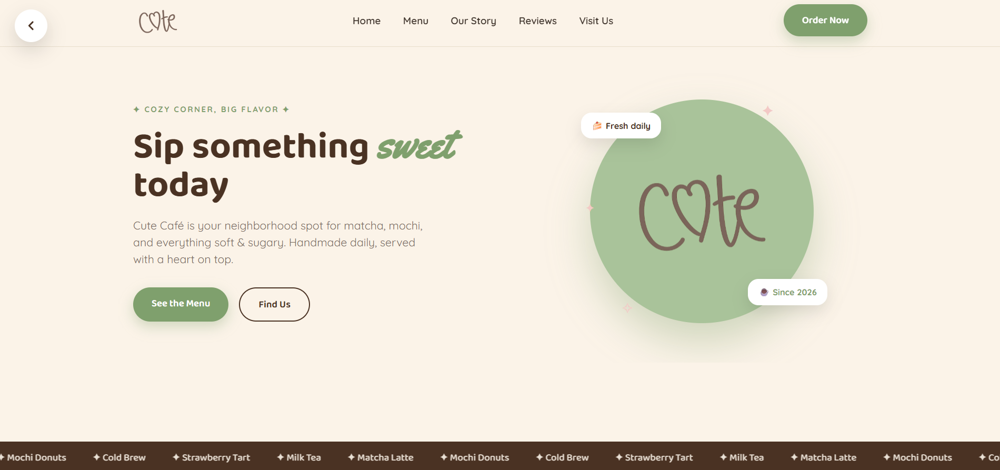

🌟 Featured Work
This collection highlights three projects that showcase my approach to UI/UX design. From concept and research to polished interfaces and responsive experiences, each project focuses on usability, accessibility, visual consistency, and creating enjoyable interactions for users.
🛠 My Design Process
Every project follows a structured, user-centered design workflow that helps transform ideas into intuitive digital experiences.
📂 Featured Projects
Explore three projects that reflect my passion for designing intuitive interfaces, crafting engaging user experiences, and building responsive digital products.

☕ Cute Café
A pastel-themed café ordering experience designed to simplify browsing, ordering, and collecting rewards while creating a cozy digital atmosphere.
View Project →
🎵 Music Player
A modern vinyl-inspired music player featuring immersive music and satisfying user interactions, responsive layouts, and smooth micro-animations.
View Project →
💳 Vault Finance
A sleek fintech landing page showcasing secure digital banking, smart budgeting, expense tracking, and investment solutions with a modern, conversion-focused UI.
View Project →✨ Key Design Skills
🛠 Tools & Technologies
📊 Portfolio Highlights
3+
Featured UI/UX Projects
20+
UI Screens Designed
100%
Responsive Layouts